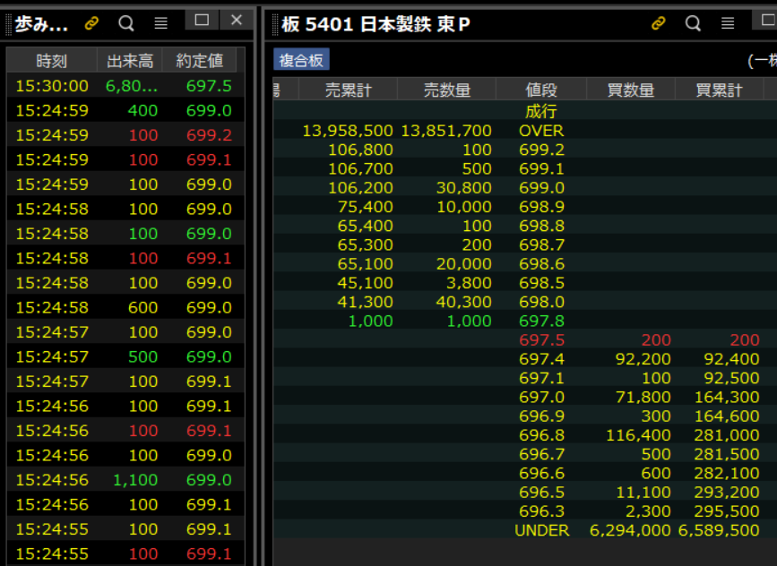

TACTICAL CHECKLIST — 板読みデイトレード
板読みデイトレード 1
本資料の位置づけ
書籍「板読みデイトレード術／けむ著」で紹介されている板読み手法、小技、トレード戦略を、公開情報および書評・要約記事に基づいて実戦チェックリストとして整理した。書籍本文の直接引用ではなく、手法の概念をアクショナブルな形式に再構成した。正確な理解のためには、原本の参照をすること。
免責事項
記載内容に基づく投資判断は自己責任で行うこと。相場環境は常に変化しており、過去の手法なので今も有効とは限らない。
重要・法的注意事項
見せ板（相場操縦目的の虚偽注文）を出す行為は金融商品取引法で禁止されており、違法となる。本資料は第三者の板の変化を観察・判断するためのチェックリストであり、不公正取引を推奨するものではない。また、空売り規制の回避を目的とした取引は推奨しない。両建て・空売りについては、証券会社と取引所の最新ルールに従うこと。
CH.1
板読みの基礎知識
板読みトレードを行う上で欠かせない基礎知識と「印象の探り方」を整理する。歩み値の見方、配置・変化・売買成立からの印象判断、大口と小口の違いを確認すること。
1-1
歩み値から読み取れる情報
歩み値は板読みトレードに不可欠なツール。板の変化だけでは分からない「実際の売買成立の様子」を歩み値で確認する。

1-2
基本的な印象の探り方（4ステップ①～④）
1-3
大口注文と小口注文の見方
CH.2
板読みの手法紹介
板読み手法の整理。見せ板の判断、空振り注文の読み方、「強くない=弱い」の考え方、売買が出やすい価格帯の特定、注文テクニックを網羅する。
2-1
見せ板の判断と活用
2-2
空振り注文と板の厚み変化
2-3
注文の積極性を読む
2-4
空売りの識別と需給読み
2-5
「強くない=弱い」の判断
買いが入ると思われる場面で買いが入らない場合、ニュートラルに見えても「弱い」と判断する。以下の場面で買いが入っても、それだけで強いとは言えない。
2-6
板の厚い方向への値動き
2-7
売買が出やすい価格帯の特定
チャート派が注目する価格（移動平均、新高値・安値、VWAP）を参考に、買いが入りやすい価格・売りが入りやすい価格・攻防が盛んな価格を予測する。
2-8
寄り付き前の成行注文の確認
2-9
注文テクニック
2-10
銘柄選びと雰囲気管理
CH.3
小技紹介
板読みに直接関連するもの以外の「ちょっとした小技」。両建てを活用した空売り規制の回避や余力の繰越といった実務テクニック。
3-1
両建ての活用
両建てを活用することで、空売りに関する規制を回避しつつ、利益を固定したままポジションを維持できる。
3-2
両建て使用時の注意点
3-3
余力の繰越
CH.4
実際のトレード紹介
実際のトレード4例から抽出される実戦的な考え方と戦略を示す。ギャップダウン幅の想定、基準価格の設定、損切りの考え方など。
4-1
ギャップダウンと心理的価格帯
4-2
基準価格を使った短期的な心理読み
4-3
仮説立案とPTSの活用
4-4
損切り・カットの考え方
4-5
根拠を維持したまま見届ける
AM
毎朝チェックリスト（実用サマリー）
トレード開始前に毎朝確認すべき項目をまとめた。日々のルーティンに活用すること。
【トレード前準備】
【環境認識・価格帯把握】
【寄り付き前（8:30〜9:00）】
【トレード中のリアルタイム確認】
【エントリー・決済のルール】
出典・参考文献
本チェックリストは以下の公開情報に基づいて作成した。
- けむ。著『投資家心理を読み切る板読みデイトレード術 ～「5％」であり続けるための考え方～』（Modern Alchemists Series No. 89、パンローリング、2010年）
https://www.amazon.co.jp/dp/4775990969 - 書評「板読みデイトレード術 を読んで」— 思考と読書【お金・健康・人間関係 編】（第4章〜第7章の詳細要約）
https://thinkandreading.hatenablog.com/entry/ItayomiDayTrade - カーリル書評 — 投資家心理を読み切る板読みデイトレード術（見せ板の狙い・厚い板への値動きの解説）
https://calil.jp/review/4775990969/5806694536314880 - 「板読み徹底解説②板読みデイトレード術｜けむ。」— うみはらの株ブログ（板読み4ステップ等の要約）
https://shigotowaku2.com/?p=2278 - 「投資家の心理を読み取る 板読みデイトレード術」— 一般市民がインプットとアウトプットを繰り返す検証Blog
https://kabcha.hatenablog.com/entry/2023/05/22/225240 - 「板読みデイトレード術 5%であり続けるための考え方」— 株の投資と投機ブログ
https://investconsume.com/itayomi-daytrading/ - 国立国会図書館 書誌情報
https://ndlsearch.ndl.go.jp/books/R100000002-I000010848384